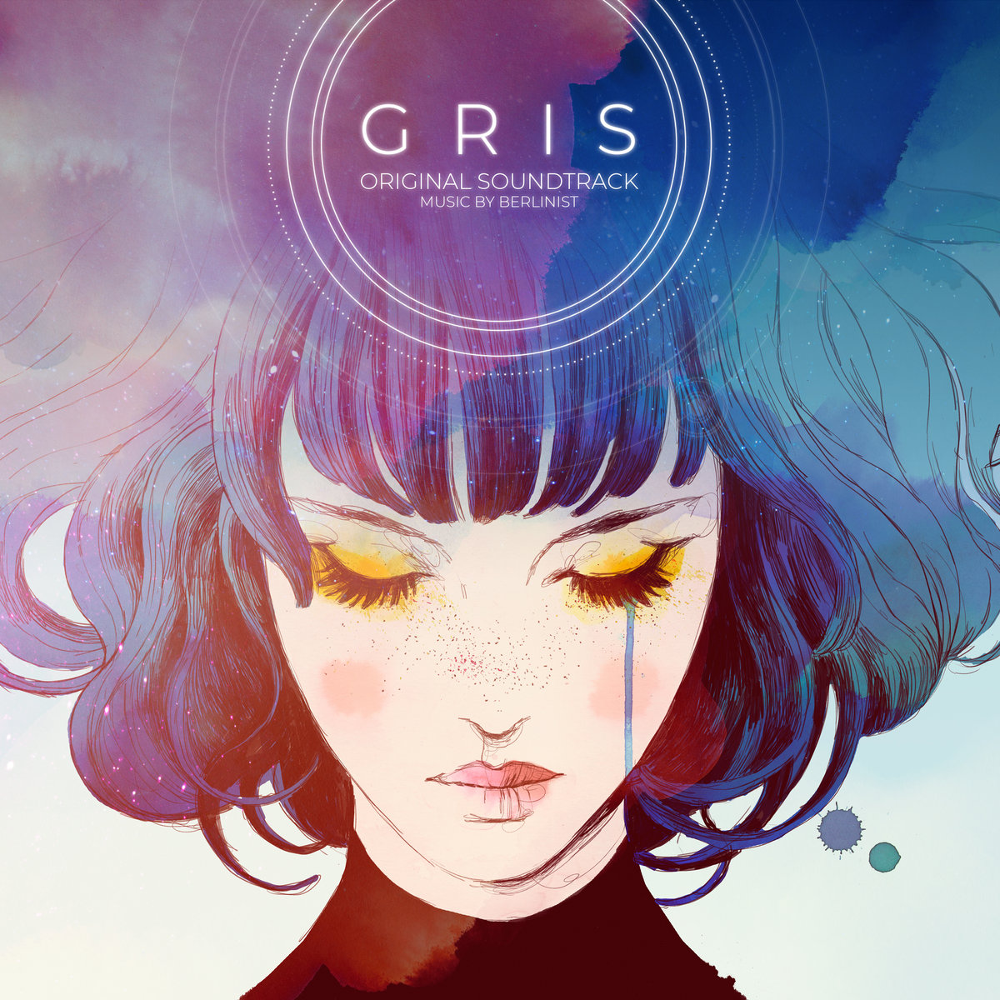

Research
Welcome to the Research Pieces section, where we dive into deep analyses and reinterpretations of iconic gaming narratives. Here, we challenge the classic tropes of video games, exploring the often-overlooked messages, hidden truths, and subversive themes that shape our gaming experiences. Each article provides a fresh perspective, reimagining the stories we thought we knew.
Anamorphine is a first-person exploration game that tells a poignant and immersive story centered on mental health, trauma, and memory—all without the use of dialogue or text. Instead, the game relies entirely on visual storytelling, atmospheric sound design, and environmental transformation to communicate the inner emotional world of its protagonist, Tyler. Players step into Tyler’s mind as he struggles to process the emotional fallout of a tragic event: the sudden accident that ends his wife Elena’s promising career as a cellist. As guilt and grief consume him, Tyler begins to retreat inward, and the world around him morphs into surreal, dreamlike landscapes that shift and distort in response to his psychological state. These environments are not just settings—they are metaphors for Tyler’s denial, depression, and fragile mental condition. The gameplay unfolds as a passive experience, guiding players through a series of symbolic spaces that gradually unravel the narrative. Without puzzles or combat, the player is instead invited to absorb the story through observation, interpretation, and emotional engagement. Objects melt, rooms dissolve, and memories loop or collapse in on themselves—all expressing themes of helplessness, isolation, and the passage of time Read the full review on WayTooManyGames

INSIDE (2016) is a critically acclaimed puzzle-platformer developed by Playdead, known for its haunting atmosphere, minimalist storytelling, and unsettling themes. Players control a nameless boy navigating a dystopian world filled with shadowy figures, mind control devices, and eerie experiments. The game builds a deep sense of tension through its somber visuals, ambient sound design, and environmental storytelling. As the narrative unfolds, the boy infiltrates a high-security research facility, where it's revealed that grotesque experiments on human bodies are being conducted. The story takes a surreal and disturbing turn in its final act when the boy becomes absorbed into a massive, fleshy amalgamation of human limbs and torsos known as the Huddle. This grotesque creature, a culmination of failed or forced human experimentation, gains consciousness and breaks free of containment. In a violent and chaotic rampage, the Huddle smashes through the facility, destroying equipment and killing scientists in a desperate attempt to escape. The game ends ambiguously, with the blob crashing through a wall and coming to rest in a sunlit clearing, leaving players to interpret whether this moment represents freedom, death, or a chilling stasis.
Alice’s family dies in a tragic house fire, an event that leaves her deeply traumatized and mentally scarred. Consumed by survivor’s guilt and unable to cope with the trauma, Alice is institutionalized in the grim and oppressive Rutledge Asylum. Isolated and tormented by her memories, she eventually falls into a coma, retreating into a fractured, nightmarish version of Wonderland—a place once full of whimsy, now corrupted by her psychological turmoil. In this dark reimagining of Wonderland, Alice is guided by a cryptic and skeletal Cheshire Cat, who serves as both an ally and a cynical commentator on her mental state. As she journeys deeper into this twisted landscape, she must confront grotesque and horrifying versions of familiar characters, such as a monstrous Queen of Hearts, a deformed Mad Hatter obsessed with mechanical experiments, and a sorrowful White Rabbit. Each represents a distorted aspect of Alice's psyche and the trauma she is trying to overcome. Armed with fantastical weapons like the Vorpal Blade and teapot cannons, Alice battles through warped environments that reflect her fractured memories and emotional pain. Her journey through Wonderland becomes a symbolic quest to reclaim her sanity, confront the truth of her past, and ultimately take control of her mind.
Gris is a side-scrolling platformer that tells the story of a young woman navigating the emotional aftermath of a traumatic experience, interpreted through a beautifully abstract and symbolic lens. Without any combat, text, or dialogue, the game uses stunning watercolor visuals, seamless animation, and an evocative orchestral score to convey Gris's emotional journey. Players explore a world that evolves as Gris regains her voice and rediscovers colors—each representing a stage of grief such as denial, anger, depression, and acceptance. Through platforming and light puzzles, players unlock new abilities that allow Gris to progress and transform her environment, reflecting her slow journey toward emotional healing. Read the full article by Nicolle Lamerichs
